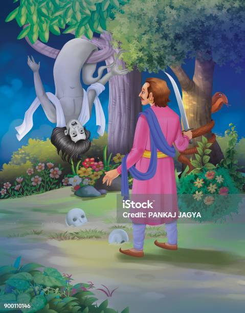
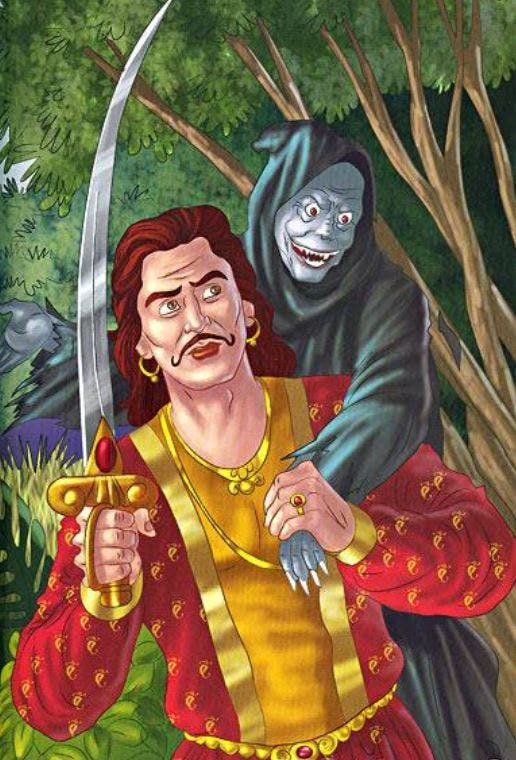

As Vikramaaditya was going, Vaitaal said - "Vikram, Listen to another story,
so that we pass time. I tell you the story of Bhadrasen who was the king of
Punyapur. He was very religious and a learned king. As he grew old he thought
"if I have not enjoyed pleasures being a king, then my life was useless". So he
started enjoying beautiful women, so much so that he forgot his kingdom.
Bhadrasen's minister Suyash was also very intelligent. He got worried seeing
the king's condition. He tried to explain the king several times but Bhadrasen
was adamant. He didn't listen to him at all. His desires grew so much that he
took even one of his courtier's wife as his keep. His people were abusing him
but Suyash was so intelligent that people were not able to agitate against the
king.
Image 1

Image 2

Image 3
Suyash's wife was also worried hearing all this. One day she said to her
husband - "For how long we will tolerate this defame. Let us go from here
pretending that we are going for pilgrimage." Suyash agreed at this. Next day
he requested the king to grant him leave for the pilgrimage, and he left the
city with his family.
The king appointed another minister replacing Suyash, but he himself started
conspiring to take the kingdom. One day Suyash got the news that the people
of the kingdom had agitated; the minister, who had replaced him, had taken
kingdom, and expelled the king. Suyash got very sad to hear this, but he
didn't return from the pilgrimage. Suyash had come to Raameshwaram where
Raam built the bridge on sea. Next day when he went to take bath in the sea,
he saw a beautiful woman sitting on a branch of a tree coming out of the sea.
Seeing that woman Suyash got attracted to her, she also smiled at him, and
the tree disappeared in the sea along with the woman.